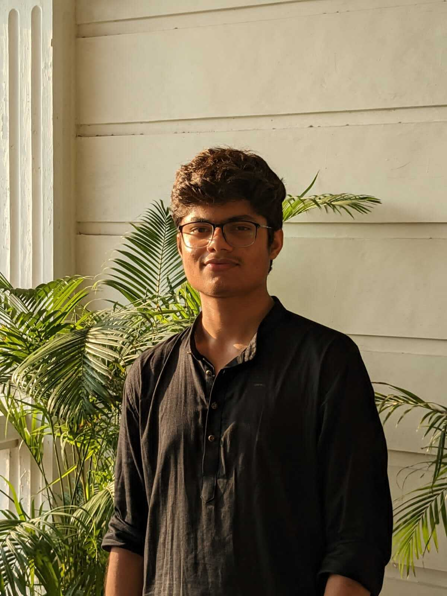

Hi,
I'm Aryan Kumawat
Frontend Developer.
A passionate frontend web developer with a keen eye for design and a love for creating
seamless user
experiences.
My goal is to bring ideas to life through clean and efficient code, ensuring that every user
interaction
is intuitive and engaging.

"Hey there, I'm Aryan Kumawat, and I'm thrilled to welcome you to my college portfolio website! Currently in
my 2nd year of pursuing a B.Tech in Computer Science and Engineering from SRM University, I'm embarking on a
journey that's a perfect blend of technology and passion.
While my roots are in sports, I'm also stepping into the exciting realm of frontend development. I might be
a beginner, but my enthusiasm for this field is boundless.
As I dive into frontend development, I'm embracing the challenges with open arms and a willingness to learn.
I'm excited to document my progress, share my insights, and connect with fellow enthusiasts and
learners.
From a young age, sports have been my true passion. I've proudly represented my state in a variety of sports, and I've had the honor of leading my teams as their captain. Being in a leadership role has taught me the value of teamwork, discipline, and the thrill of achieving collective goals. While I thrive in competitive environments, my friendly and approachable nature has allowed me to forge connections with people from all walks of life. Whether it's striking up a conversation with a colleague or lending a helping hand to someone in need, I believe in the power of genuine human connections.
Hard work and perseverance are at the core of who I am. I approach my work with dedication and an unrelenting desire to excel. The challenges that come my way are opportunities for growth, and I'm not one to back down easily. My commitment to my craft drives me to constantly push my boundaries and explore new horizons. "I'm genuinely excited about the prospect of connecting with fellow enthusiasts, collaborators, and kindred spirits. Let's embark on a journey of shared experiences, growth, and positive impact. Feel free to reach out—I'm eager to learn from your insights, share stories, and explore how our paths might intersect. Here's to new beginnings and endless possibilities!"
From a young age, sports have been my true passion. I've proudly represented my state in a variety of sports, and I've had the honor of leading my teams as their captain. Being in a leadership role has taught me the value of teamwork, discipline, and the thrill of achieving collective goals. While I thrive in competitive environments, my friendly and approachable nature has allowed me to forge connections with people from all walks of life. Whether it's striking up a conversation with a colleague or lending a helping hand to someone in need, I believe in the power of genuine human connections.
Hard work and perseverance are at the core of who I am. I approach my work with dedication and an unrelenting desire to excel. The challenges that come my way are opportunities for growth, and I'm not one to back down easily. My commitment to my craft drives me to constantly push my boundaries and explore new horizons. "I'm genuinely excited about the prospect of connecting with fellow enthusiasts, collaborators, and kindred spirits. Let's embark on a journey of shared experiences, growth, and positive impact. Feel free to reach out—I'm eager to learn from your insights, share stories, and explore how our paths might intersect. Here's to new beginnings and endless possibilities!"
My Skills
.jpg)
.jpg)
I possess a strong foundation in web development, proficiently working with
Html and Css to create dynamic and responsive web applications.
My expertise extends to using HTML and CSS for designing visually captivating interfaces that prioritize user experience.
Alongside my technical prowess, I excel in competitive coding, consistently solving algorithmic challenges and participating in coding competitions. This skillset is complemented by my problem-solving aptitude, wherein I dissect intricate problems, recognize patterns, and devise efficient solutions.
My expertise extends to using HTML and CSS for designing visually captivating interfaces that prioritize user experience.
Alongside my technical prowess, I excel in competitive coding, consistently solving algorithmic challenges and participating in coding competitions. This skillset is complemented by my problem-solving aptitude, wherein I dissect intricate problems, recognize patterns, and devise efficient solutions.